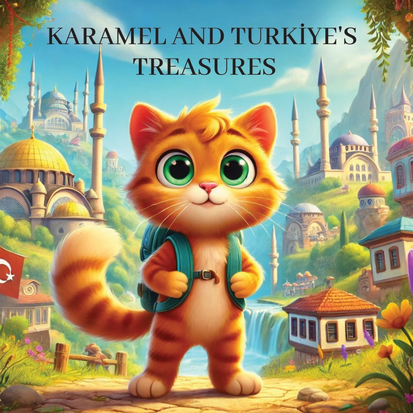
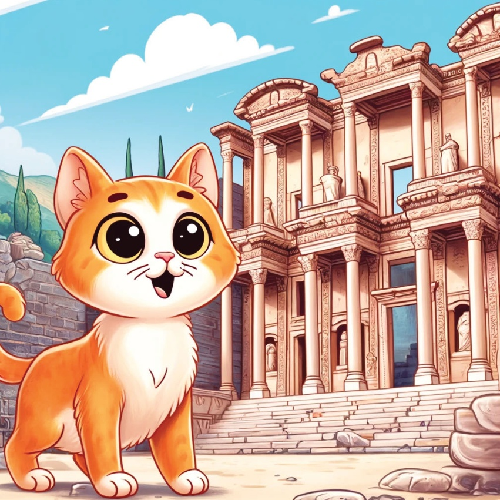
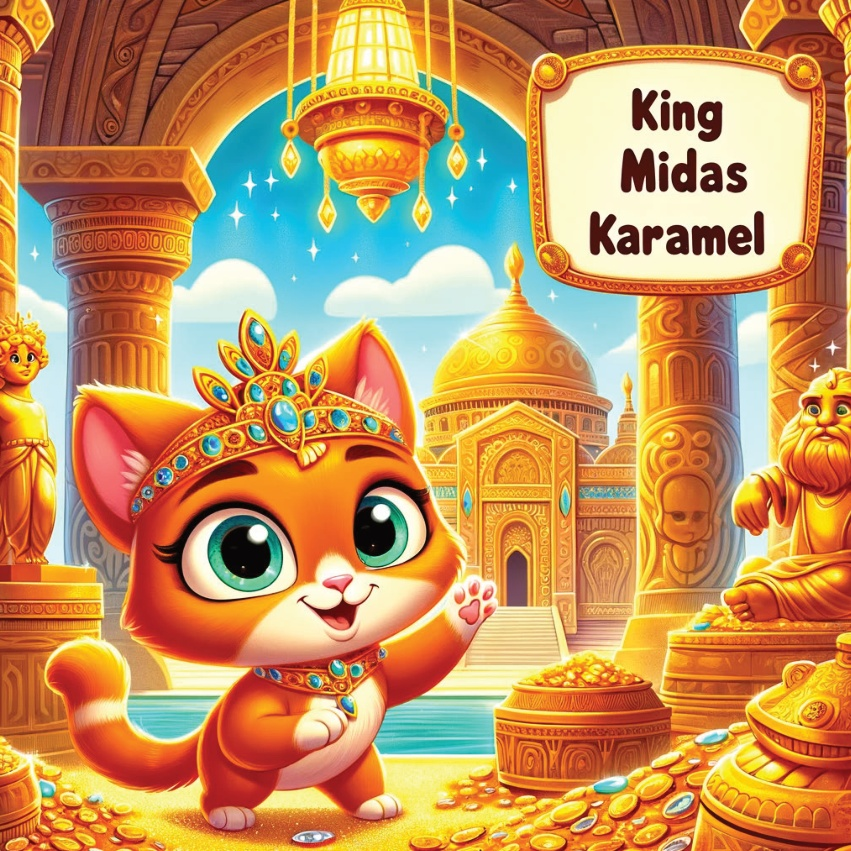
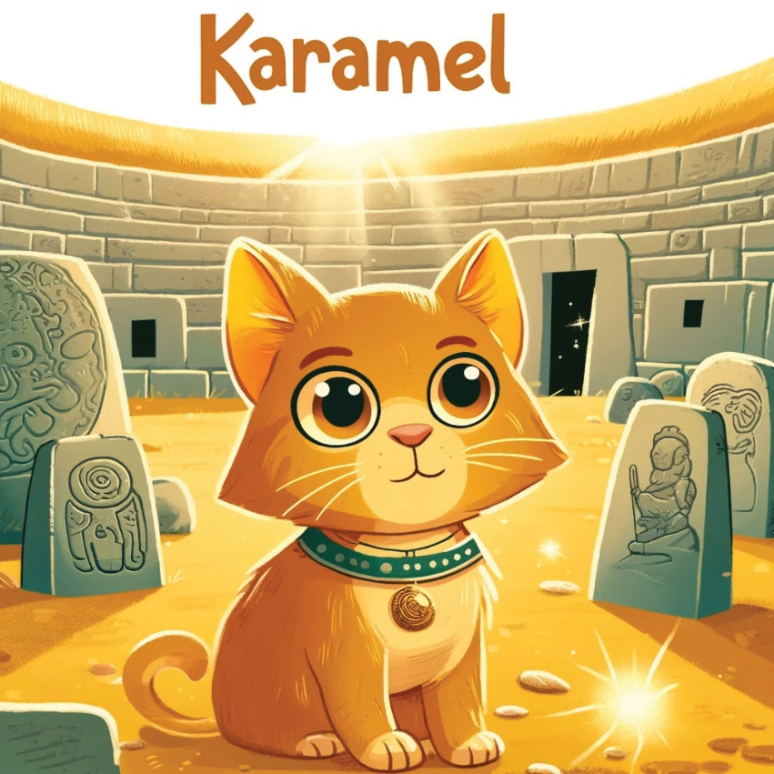

1

2

3
Jednom davno, u sunčatom kutku svijeta zvanom Türkiye, živio je znatiželjni mali mačak po imenu Karamel. Karamel je voljela avanture i otkrivanje novih blagova. Jednog dana, pronašla je staru mapu blaga s različitim lokacijama označenim diljem Türkiye. Uzbuđena, zaputila se u putovanje kako bi pronašla ta skrita blaga.
4
5
Region Marmara –
Blago Topkapi
Prva stanica Karamel je bila Istanbul,
gde je posetila slavni Topkapi Palat.
Ona je otkrila blagajnu palate,
punu nakita, zlatnih artefakata
i istorijskih relikvija, svake koje priča priču
o Osmanskom Carstvu.
6
7
Egejski Region –
Blago Efezusa
Zatim je Karamel putovala u drevni grad Efezus.
Prošetala je kroz ruševine i pronašla grandioznu biblioteku, koja je nekada bila prepuna svitaka i znanja, smatrana pravim blagom od strane drevnih Grka.
8

9
Mediteranski Region –
Skrivena Blaga Aspendosa
U mediteranskom regionu,
Karamel je posjetila drevni pozorište Aspendos.
Otkrila je skrivene spremišta ispod bine,
gdje su čuvanu dragocjenosti sa nastupa
dalekog prošlosti, uključujući drevne maske,
kostimke i muzičke instrumente.
10
11
Centralna Anadolija –
Zlato kralja Midasa
Karamel je zatimotputovala u drevnu
Friјgimentosku prijestolnicu, Gordium, u Centralnoj Anatoliji.
Pronašla je legendarno blago kralja Midasa,
sa zlatnim statuama i artefaktima,
i saznala priču o kralju koji je pretvorio
sve što je dodirnuo u zlato.
12

13
Region na Crnom moru –
Bogataštva Manastira Sumela
U regionu Crnog mora, Karamel je posjetila manastir Sumela.
Penjala se na strme stijenene staze i otkrila skrite prostorije
ispunjene drevnim rukopisima, religijskim ikonama i vrijednim relikvijama.
14
15
Istočni Anatolija –
Blago sa planine Ağrı
U Istočnoj Anatoliji,
Karamel se uputila ka planini Ağrı.
Uspela je da čuje legendu o Nojevoj arci
i otkrila skrovita blaga
koja se vjeruje da su ostatci od
dreventog broda.
16
17
Središnji Anatol –
Zlato Gobekli Tepe
Karamelova je zadnja stanica bila u Središnjem Anatolu, gdje je posjetila Gobekli Tepe, najstariji hram na svijetu.
Otkrila je drevne kamenice i zakopane blago koje je ispričalo priču o ranoj ljudskoj civilizaciji.
18

19
Srdцем испуњеним чудом и главом пуном прича о спекта클 Türkiye-нским благама, Карамел је схватила да су стварна блага богата историја и култура Турчије. Повратила се кући, са сновима о свом следећем авантури.
20
21
22